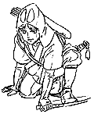

制作日誌 1996年6月
96.6.01（土）
絵コンテCUT999～1,033まで35CUTアップ。計1,039CUT88分34秒7.92コマ。
ラッシュチェックが行われる。リテーク8CUT。
96.6.03（月）
山森君（CUT901～911）、山田君（CUT1,013、1,024～1,033）打ち合わせが行われる。
96.6.04（火）
遠藤さん打ち合わせ。CUT999～1,023まで24CUT。続いて笹木君の打ち合わせ。CUT942～950、971～976まで15CUT。
森友さんが打ち合わせ。CUT912～941まで29CUT。
96.6.6（木）
夜に宮崎監督からアイスクリームの差し入れあり。
第25回企画検討会「ごん太を殺せ！」が行われる。宮崎監督がレポーターのため、前回のように激論には至らず。さて次回はどうなるやら。
96.6.08（土）
ラッシュが行われる。
東小金井駅南口でメロンが安く売っていたため、怪しいオヤジが売っていたにもかかわらず差し入れに買ってきた人が多く、ジブリにメロンが溢れかえる。人によって買値がまちまちなのがますます怪しい。
96.6.10（月）
「耳をすませば」で部分的に美術を担当していただいた、イバラードの井上直久氏来社。
金色に輝くシシ神が登場するCUT320、328の兼用カットの背景の色が決まらず、山本さんがかなり悩んでいる様子。何度も宮崎監督に見せては描きなおしをしている。
96.6.11（火）
コンピューターで百瀬さんが作っていた、矢がタタリ神の目に刺さるCUTがついに完成。早速宮崎監督が作画スタッフに号令をかけ、ＣＧ部で発表会がおこなわれる。もちろん「見たあとに拍手を忘れるな」とのアドバイスつき。
96.6.13（木）
恒例となりつつある夜食会が開かれる。今日は動画チェック舘野さんが作った水餃子。
96.6.18（火）
知り合いの某雑誌編集者から「まんだらけ」のカタログが送られてくる。宮崎駿特集と銘打ったそのカタログには、ラピュタを中心に掘り出し物が満載！ 「ラピュタ」のレイアウトが2～4万円、セル画が3～8千円、「ナウシカ」のサイン色紙が20万円などなど。最も高い値がついていたのが「ハイジ」第一話の生絵コンテで、なんと60万円！ 他に面白いのが「ナウシカ」のポスターの印刷原版（もちろん金属性）が売られていたこと。メインスタッフルームにてみんなでコピーを取り囲む。二木さんや遠藤さんは自分の描いたレイアウトが売られていることに複雑な表情を浮かべ、宮崎監督は、「色紙一枚20万で売れるんだったら、一日5枚づつ描いて生活しよう」と冗談を言っていた。勿論鈴木プロデューサーは渋い顔。
絵コンテCUT1034～1085まで53CUTアップ。総秒数は、92分12秒。
96.6.19（水）
吉田君の打ち合わせ。CUT1034~1062まで30CUT。
96.6.20（木）
テレビマンユニオンの浦谷さんが来社し、例によってカメラを廻す。
本日も11時頃から夜食会が開催される。今回はトマトソーススパゲッティ。なお浦谷さんによって高坂さんの調理している模様がビデオに収録された。
96.6.21（金）
CUT700番台の月光シーンの35ミリ色テストラッシュを行う。色調を変えずに色のコントラストを統一して表現したい保田さんと、それを崩し、上着の色のみコントラストを上げたいと主張する宮崎監督の意見が対立、作監の安藤君を含め廻りの人は、宮崎監督に意見を求められても「まあ、どちらでも…」とどっちつかずの意見に終始。結局保田さんは宮崎監督に押し切られるもなんとなく納得できない様子。ただ黒田さんの 美術の美しさには全員驚嘆の声を上げる。
包帯男のマッピング処理のためのラッシュを行う。ついでに色パカ発見。
主役のアシタカの声が「風の谷のナウシカ」のアスベルや「家族ゲーム」の松○○治さんに決定。（すみません、今はまだ内緒です）
大村さんが約半年をかけて描き上げたタタリ神の動画をアクションレコーダーに入れてみる。蛇がきちんと送られている。こりゃ時間がかかるわ。
絵コンテの内容について宮崎監督が、高坂さん、安藤君に意見を聞きながら、時間の流れとCUT割りの関係について解説。
96.6.22（土）
ラッシュが行われる。
96.6.24（月）
「今朝５時までかかった」と宮崎監督が、本日の打ち合わせ分の絵コンテを上げてきた。CUT1,086～1,141まで57CUT、計1,149CUT、95分12コマ。
粟田君打ち合わせ。CUT1,086～1,119まで35CUT。
大谷さん打ち合わせ。CUT1,120～1,140まで21CUT
96.6.25（火）
7月中旬に社員旅行を行うことに突然決定したが、宮崎監督、鈴木プロデューサーは不参加。また行く方法について好きな方法で行きたいと主張する、実行委員長制作部田中と、全員揃って電車とバスを乗り継いで行かせたい宮崎監督が対立し、おまけに向こうに着いてからの行動についても基本的に自由を主張する田中と各種イベントをさせたい宮崎監督が対立。あわや中止というところまでいくが、鈴木プロデューサーの説得で田中が宮崎案を全面的に受け入れ決着。
96.6.27（水）
新人たちが研修の最後にセル画を制作している。みんな横から覗いては、あの色はいまいちだとか、麦酒がまるでオレンジジュースに見えるとか、いいかげんなことを言いまくって研修生を困らせている。
カレンダーの仕事が終わった男鹿さん来社。Ｃパートのボードを何枚か持ってくる。その際、先日リテークになったCUT1について宮崎監督の説明を受ける。宮崎監督の要求は、今のままだと立体感がでないのと、スーパーの雲の感じがいまいちなので、折り重なった山の部分を4つのブックに切り分け、雲を密着で引っ張りたい、というもの。結局、男鹿さんが、修正ではなく、全て描きなおすことになる。
篠原さん打ち合わせCUT1063～1085まで23CUT
| 次のページへ |
| 日誌索引へ戻る |
| 「もののけ姫」トップページへ戻る |